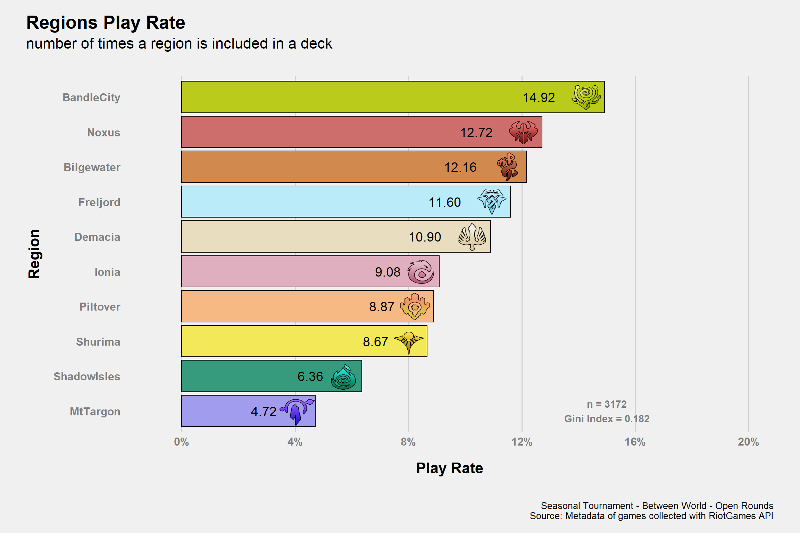

Data
Number of (Ranked) matches analyzed 195 or 390 games.
Last Update: 2021-11-27 08:19
Missing Games
The following data is related to the the number of games missing to recreate a match.So when I could only collect either a win or a loss or both a win and a loss but not the remaining game. It is not the total number of missing games as it doesn’t account for the cases where I lack all games but that value can’t be known as it’s impossible to know whenever the round was played or not.
During the partial results is the graph is lacking I recovered all games I could up until that moment.
Figure 1: Uncomplete Matches Distribution
Matches Coverage
Decks
As this is the Seasonal Tournament let’s start with the decks/archetype informations
This is also the moment of the meta where the classification Archetype = Champion+Region shows its biggest limitation as there are an increase in tech champions (usually in single copy)
Single Decks Stats
Deck's Stats
Seasonal Tournament - Between World - Open Rounds
Relative frequencies from all data or only lineUps with full information Source: Metadata of games collected with RiotGames API
- Ban Rate: ratio between the number of bans and the number of matches of a deck.
\[\begin{equation} BanRate = \frac{\#ban}{\#match} \end{equation}\]
Example: 2 Line-Ups contained a Teemo/Ezreal deck, both played all 9 matches and Teemo/Ezreal was banned respectively 3 and 6 times; the ban rate would be \(\frac{(3+6)}{(9+9)} = 50\%\)
- PlayRate: ratio between the number of times a deck appears among all lineUps (both including or not incomplete lineUps data) and the number of all decks in all lineUps.
Full Line-Ups
LineUp's Playrates
Seasonal Tournament - Between World - Open Rounds
Data from only full Line-Ups. Source: Source: Metadata of games collected with RiotGames API FALSE
LMI
Tier0 with LMI >= 97.5
Tier1 with LMI \(\in\) [85,97.5)
Tier2 with LMI \(\in\) [60,85)
Tier3 or lower with LMI < 60
Note: Hovering over a circle will display a deck values.
The LMI 1 2 is an Index I developed to measure the performance of decks in the metagame. For those who are familiar with basic statistical concept I wrote a document to explain the theory behind it: , it’s very similar to vicioussyndicate (vS) Meta Score from their data reaper report. The score of each deck is not just their “strength”, it takes in consideration both play rates and win rates that’s why I prefer to say it measure the “performance”. The values range from 0 to 100 and the higher the value, the higher is the performance.

Regions
Play Rate
Plot

The Gini Index is a measure of heterogeneity so, in this case and in simpler terms, how much the play rates are similar. The Index goes (when normalized like here) \(in\) [0,1] and it’s equal to 1 when there’s a single value with 100% play rate or 0 when all play rates are equal. Of course a Gini Index of 1 needs to be avoided but it’s not like the aim should be 0. As said, it’s just to add some additional tools.
Table
Legal bla bla
This content was created under Riot Games ‘Legal Jibber Jabber’ policy using assets owned by Riot Games. Riot Games does not endorse or sponsor this project.